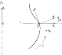

6 Coques en équilibre membranaire
\[ \DeclareMathOperator{\asym}{\symbfsf{asym}} \newcommand{\altvec}[1]{\overrightarrow{#1}} \newcommand{\D}{{\mathrm d}} \newcommand{\dbldot}{\mathbin{\mathord{:}}} \let\div\undefined \newcommand{\div}{\operatorname{div}} \newcommand{\Div}{\operatorname{Div}} \newcommand{\external}{\mathrm{ext}} \newcommand{\Eta}{\mathrm{H}} \newcommand{\Grad}{\operatorname{Grad}} \newcommand{\grad}{\operatorname{grad}} \newcommand{\tgrad}{\operatorname{\symbfsf{grad}}} \newcommand{\tGrad}{\operatorname{\symbfsf{Grad}}} \newcommand{\internal}{\mathrm{int}} \newcommand{\KL}{\mathrm{KL}} \newcommand{\kl}{\mathrm{kl}} \newcommand{\PI}{\symup{\pi}} \newcommand{\point}[1]{\symsf{#1}} \newcommand{\power}{\mathcal{P}} \newcommand{\reals}{\mathbb R} \newcommand{\Span}{\operatorname{Vect}} \newcommand{\sym}{\operatorname{\symbfsf{sym}}} \newcommand{\tens}[1]{\symbfsf{#1}} \newcommand{\tr}{\operatorname{tr}} \newcommand{\transpose}{\mathsf{T}} \renewcommand{\vec}[1]{\symbf{#1}} \]
Le présent chapitre est consacré aux coques en équilibre membranaire. Comme les membranes, ce sont des systèmes mécaniques qui équilibrent leur chargement par des efforts membranaires seulement (pas de moments fléchissants). Contrairement aux membranes, la raideur en flexion des coques en équilibre membranaire est suffisante pour leur permettre d’équilibrer les chargements sans changer de géométrie. La théorie des coques en équilibre membranaire est donc formulée dans l’hypothèse des petites perturbations.
Cette théorie peut être vue comme une approche en contraintes (généralisées) de l’équilibre des coques élastiques. La géométrie de la coque et son chargement étant donnés, on verra en effet qu’il est en général toujours possible de construire un champ de contraintes généralisées purement membranaires et statiquement admissibles avec le chargement. Comme dans l’approche en contraintes de l’équilibre élastique des milieux continus, il s’agit alors d’intégrer le champ des déformations (généralisées) pour remonter aux déplacements (généralisés). Cette dernière étape n’est pas toujours possible : dans ce cas, l’hypothèse d’équilibre membranaire de la coque est mise en défaut, et on doit traiter un problème général dans lequel efforts membranaires et flexion sont couplés.
Bien qu’elle ne soit pas toujours vérifiée, il est fréquent en phase initiale d’un projet de faire l’hypothèse d’un équilibre membranaire, qui permet d’estimer aisément les efforts intérieurs et d’obtenir ainsi un prédimensionnement. Il convient ensuite de vérifier que cette hypothèse est valide. Dans un grand nombre de situations pratiques, on constate que cette hypothèse n’est violée que localement : dans les phases suivantes du projet, la coque est alors renforcée dans ces zones uniquement afin de reprendre les efforts de flexion qui s’y développent.
Dans ce chapitre, on présente les équations des coques en équilibre membranaires, ainsi que quelques exemples d’application.
On rappelle que la théorie des coques en équilibre membranaire est formulée dans le cadre de l’hypothèse des petites perturbations. Il n’y a donc pas lieu de distinguer les configurations initiale \(\Sigma\) et actuelle \(\varsigma\) (toutes deux désignées par \(\Sigma\) dans ce qui suit), ni les contraintes généralisées \(\tens{N}^\KL\) et \(\tens{N}^\kl\) (toutes deux désignées par \(\tens{N}\) dans ce qui suit). De même, on ne distingue pas les opérateurs différentiels \(\Div\) et \(\div\), \(\Grad\) et \(\grad\).
6.1 Équilibre membranaire des coques
Dans l’hypothèse d’un équilibre membranaire, les équations d’équilibre d’une coque ont été établies au chapitre précédent sur la configuration actuelle. Puisqu’on confond ici configurations initiale et actuelle, ces équations d’équilibre s’écrivent simplement \[ \div \tens{N} + \vec{p} = \vec{0}, \tag{6.1}\] où \(\vec{p}\) désigne la densité surfacique de forces (par unité de surface de la coque). Le tenseur \(\tens{N}\) est le tenseur des efforts membranaires ; c’est un tenseur symétrique du plan tangent, dont on rappelle l’interprétation physique.
La résultante des efforts intérieurs exercés sur la facette \(\D s\) de normale unitaire \(\vec{g}\) est \[ \D \vec{R}_\internal = \tens{N} \cdot \vec{g} \, \D s. \]
À l’équation d’équilibre précédente, il faut joindre la condition aux limites sur \(\partial \Sigma\) \[ \tens{N} \cdot \vec{g} = \vec{q}, \] où \(\vec{g}\) désigne la normale unitaire sortante au bord \(\partial \Sigma\) et \(\vec{q}\) est la densité linéique des forces exercées sur ce bord.
On rappelle que
- Les forces exercées au bord de la coque sont nécessairement contenues dans le plan tangent.
- Un point régulier de la coque ne peut équilibrer une force ponctuelle.
La projection selon la normale \(\vec{n}\) de l’équation aux dérivées partielles (6.1) conduit à une équation algébrique, dite équation d’équilibre normal \[ \tens{b} \dbldot \tens{N} + \vec{p} \cdot \vec{n} = 0, \] où \(\tens{b}\) est le tenseur de courbure de la coque.
En résumé, l’équilibre membranaire d’une coque se met en équation de la façon suivante
\[ \tens{a} \cdot \div \tens{N} + \tens{a} \cdot \vec{p} = \vec{0} \qquad (\Sigma), \tag{6.2}\] \[ \tens{b} \dbldot \tens{N} + \vec{p} \cdot \vec{n} = 0 \qquad (\Sigma), \tag{6.3}\] \[ \tens{N} \cdot \vec{g} = \vec{q} \qquad (\partial \Sigma). \tag{6.4}\]
En général, la géométrie \(\Sigma\) de la coque et son chargement \(\vec{p}\) étant fixés, il est toujours possible de trouver une solution au système précédent. Par ailleurs, on évite lorsque c’est possible de résoudre l’équation aux dérivées partielles (6.2) en écrivant plutôt l’équilibre de sous-systèmes bien choisis.
6.2 Équilibre membranaire des coques axisymétriques
On considère la coque axisymétrique dont la génératrice est représentée ci-après (voir Figure 6.1). On rappelle l’expression du tenseur des courbures \[ \tens{b} = b_{tt} \, \vec{t} \otimes \vec{t} - \frac{\cos \psi}{r} \, \vec{e}_\theta \otimes \vec{e}_\theta, \] où \(b_{tt}\) désigne la courbure de la génératrice (vue comme une courbe plane). On suppose que les chargements surfacique \(\vec{p}\) et linéique \(\vec{q}\) sont axisymétriques et n’ont pas de composante orthoradiale \[ \vec{p} = p_t(s) \, \vec{t} + p_n(s) \, \vec{n} \quad \text{et} \quad \vec{q} = q_t \, \vec{t} \] où les composantes \(p_t\) et \(p_n\) et \(q_t\) ne dépendent pas de l’angle \(\theta\).

Soit \(\Pi\) un plan horizontal à l’altitude \(z\) fixée. On considère le sous-système \(\Sigma'\) constitué par la partie de la coque située au-dessus du plan \(\Pi\). Les moments étant évalués par rapport à un point de l’axe de révolution, on s’intéresse au torseur des efforts extérieurs (résultante : \(\vec{R}_\external'\) ; moment : \(\vec{M}_\external'\)) et intérieurs (résultante : \(\vec{R}_\internal'\) ; moment : \(\vec{M}_\internal'\)) exercés sur ce sous-système. L’équilibre du sous-système considéré conduit à \[ \vec{R}_\internal' + \vec{R}_\external' = \vec{0} \quad \text{et} \quad \vec{M}_\internal' + \vec{M}_\external' = \vec{0}. \]
Compte-tenu de l’invariance par rotation autour de l’axe vertical de la géométrie et du chargement, la composante verticale \(\vec{M}_\external' \cdot \vec{e}_z\) du moment des actions extérieures est nul \[ \vec{M}_\external' \cdot \vec{e}_z = \vec{M}_\internal' \cdot \vec{e}_z = 0. \]
Les efforts intérieurs s’exercent au droit de la coupure ; la normale sortante étant \(-\vec{t}\), la densité linéique des efforts extérieurs est \(-\tens{N} \cdot \vec{t}\). Si \(r\) désigne le rayon du parallèle contenu dans le plan \(\Pi\), le moment des efforts intérieurs s’écrit \[ \vec{M}_\internal' = \int_0^{2\pi} \bigl(r \, \vec{e}_r + z \, \vec{e}_z \bigr) \wedge \bigl( -\tens{N} \cdot \vec{t} \bigr) \, r \, \D \theta, \] soit \[ \vec{M}_\internal' \cdot \vec{e}_z = -\int_0^{2\pi} r^2 \, \bigl( \vec{t} \cdot \tens{N} \cdot \vec{e}_\theta \bigr) \, \D \theta = -2\pi \, r^2 \, \bigl( \vec{t} \cdot \tens{N} \cdot \vec{e}_\theta \bigr), \] où l’on remarque que l’effort membranaire \(\bigl( \vec{t} \cdot \tens{N} \cdot \vec{e}_\theta \bigr)\) est indépendant de \(\theta\). On en déduit finalement que \[ \vec{t} \cdot \tens{N} \cdot \vec{e}_\theta = 0 \] (pas de cisaillements plans). Il reste donc à déterminer les composantes \(N_{tt}\) et \(N_{\theta\theta}\) du tenseur des efforts membranaires.
Pour déterminer \(N_{tt}\), il suffit d’écrire l’équilibre en résultante selon la verticale du sous-système \(\Sigma'\) considéré. En effet \[ \vec{R}_\internal' = \int_{0}^{2\pi} \bigl( -\tens{N} \cdot \vec{t} \bigr) \, r \, \D \theta = -r \, N_{tt} \int_{0}^{2\pi} \vec{t} \, \D \theta = -2\pi \, r \, \cos \psi \, N_{tt} \, \vec{e}_z, \] soit \[ N_{tt} = \frac{\vec{R}_\external' \cdot \vec{e}_z}{2\pi \, r \, \cos \psi}. \]
La résultante \(\vec{R}_\external'\) dépend de l’application et doit être évaluée au cas par cas. On en déduit alors l’expression de \(N_{tt}\) par la relation précédente. Finalement, on utilise l’équation d’équilibre normal (6.3) pour déterminer \(N_{\theta\theta}\) \[ N_{\theta\theta} = \frac{r}{\cos \psi} \bigl( b_{tt} \, N_{tt} + \vec{p} \cdot \vec{n} \bigr). \]
6.3 Déformations des coques en équilibre membranaire
Dans l’hypothèse des petites perturbations, on peut linéariser l’expression des déformations membranaires en fonction du champ des déplacements \[ \tens{E} \simeq \tens{\varepsilon} = \sym \bigl( \tens{a} \cdot \grad \vec{u} \bigr). \]
Afin de déterminer les déplacements, il faut relier les déformations membranaires aux efforts membranaires par l’intermédiaire des relations de comportement. Celles-ci ne peuvent être obtenues que par une analyse de la coque vue comme un solide tridimensionnel. Nous admettrons ici que, pour une coque linéairement élastique \[ \tens{N} = \frac{E \, h}{1 - \nu^2} \bigl[ \bigl( 1 - \nu \bigr) \tens{\varepsilon} + \nu \, \bigl( \tr \tens{\varepsilon} \bigr) \, \tens{a} \bigr], \] où \(h\) désigne l’épaisseur de la coque, \(E\) son module d’Young et \(\nu\) son coefficient de Poisson. Dans une base orthonormée \((\vec{e}_1, \vec{e}_2)\) du plan tangent, les relations de comportement s’écrivent \[ N_{11} = \frac{E \, h}{1 - \nu^2} \bigl( \varepsilon_{11} + \nu \, \varepsilon_{22} \bigr), \quad N_{22} = \frac{E \, h}{1 - \nu^2} \bigl( \varepsilon_{22} + \nu \, \varepsilon_{11} \bigr), \] \[ N_{12} = \frac{E \, h}{1 + \nu} \, \varepsilon_{12}. \]
Ces relations s’inversent comme suit \[ \varepsilon_{11} = \frac{N_{11} - \nu \, N_{22}}{E \, h}, \quad \varepsilon_{22} = \frac{N_{22} - \nu \, N_{11}}{E \, h} \quad \text{et} \quad \varepsilon_{12} = \frac{1 + \nu}{E \, h} \, N_{12}. \]
Une fois déterminés les efforts membranaires, on peut alors établir l’expression des déformations membranaires linéarisées. Si celles-ci sont géométriquement compatibles, les déplacements sont alors obtenus par intégration. Dans le cas contraire, l’hypothèse d’équilibre membranaire n’était pas légitime et il est nécessaire de prendre en compte la flexion dans la coque.